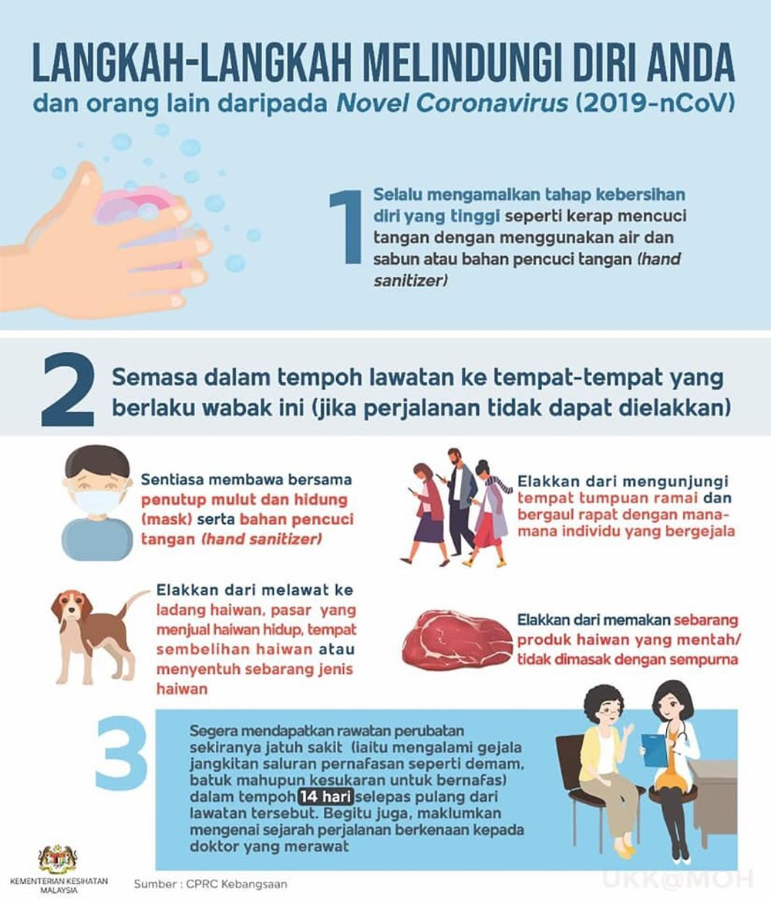
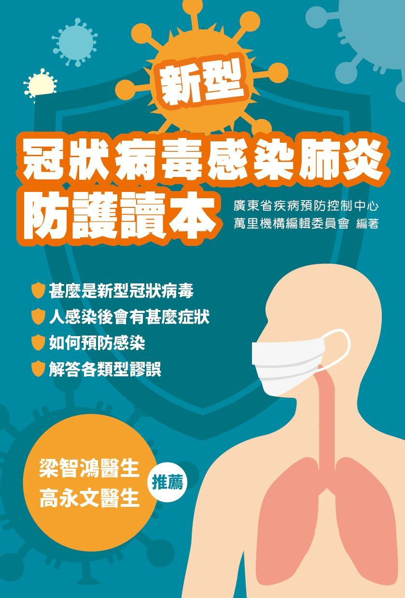
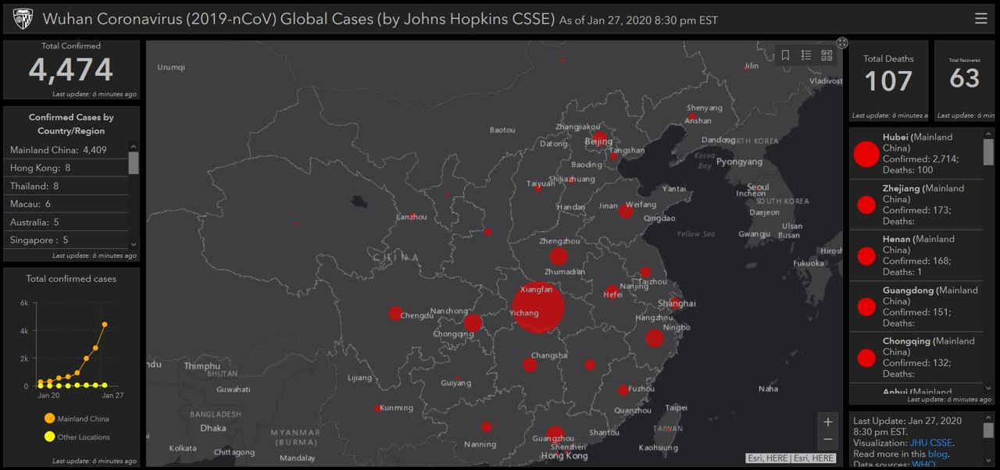

28/01/2019
28/01/2019
新型冠状病毒 2019-nCoV 在全球各地的案例渐渐增加，并出现死亡案例。虽然我国的情况依旧在控制范围内，但也请学生及家长们遵守我国卫生部的预防措施。其中包括：
1）保持良好的个人卫生，包括经常使用水和肥皂洗手，或使用免水洗手液。
2）避免到受影响的地区。但若无法避免，请
i）随身携带和使用可同时遮盖鼻子的口罩和免水洗手液。
ii）避免到人多的地方或与出现症状的人接触。
iii）避免到动物园、售卖活体动物的市场及屠宰场，并避免接触任何动物。
iv）避免食用生肉或未煮熟的肉。
3）从受影响的地方回来14天内，若出现以下类呼吸道疾病症状，请立即就医，并告知医生相关旅程：
a）发烧
b）咳嗽
c）呼吸困难
此外额外分享一些与新型冠状病毒相关的讯息：
1） 广东省疾病预防中心的防护本（电子版）：
https://qrcode.orangenews.hk/books/20200126/
2） 约翰·霍普金斯大学的武汉病毒实时跟踪地图：
https://gisanddata.maps.arcgis.com/apps/opsdashboard/index.html#/bda7594740fd40299423467b48e9ecf6
最后，祝大家新年快乐，健健康康。


